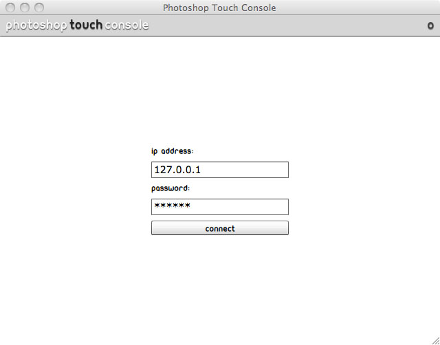
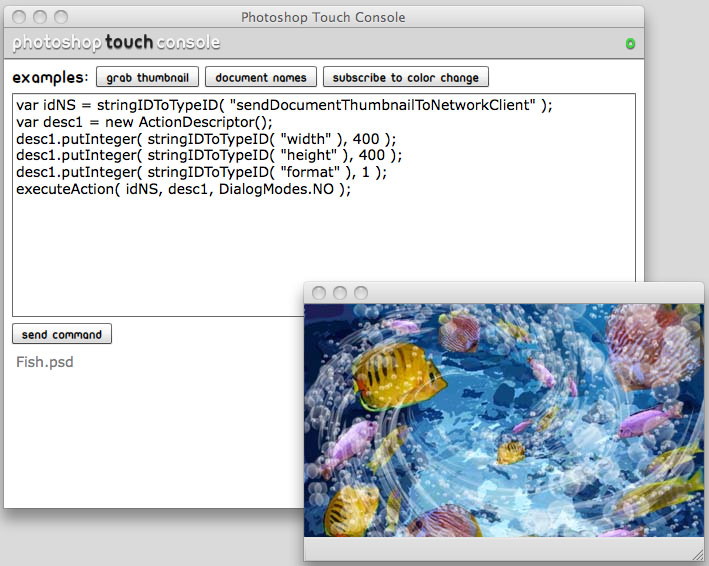

AIR Console
Requirements
- Flash Builder 4.5
- Flex 4.5
- AIR 2.6
- 's AS3 swc (PhotoshopSDK.swc) located in
samples/air/as3sdk
Overview
This AIR application allows you to try out ExtendScript JS commands
on the desktop and view the response. It's great for
playing with ExtendScript before implementing it in your
other applications.
|  |  |
How to use this project
In Flash Builder 4.5, click on Import > Flash Builder Project.
Select "PhotoshopSDKConsole.fxp" and click OK.
The project is set up to run on the desktop as an AIR application.
API Documentation
For more details on the API, visit the 's ActionScript 3 API Document.
Credits
Author: Renaun Erickson (http://renaun.com)